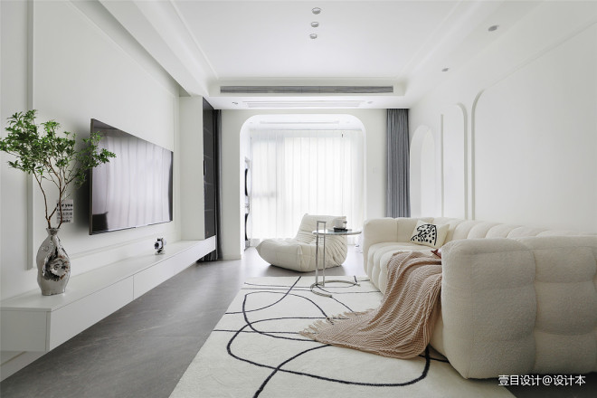

img元素底部空白间隙
img元素产生底部空白间隙条件
- img元素的父盒子是块盒。
- 父盒子的高度自适应内容高度。
- 产生：img元素的底部与父盒子底部存在空白间隙。
- 变化：空白间隙的高度随着父盒子的font-size值变化：
- 当值为0，则消失。
- 当值增大到一定量，则开始增大。
- 当值减小到一定量，则开始减少。
- vertical-align用于多个文本、行盒、行块盒，以及table-cell元素内内容，在垂直方向上的对齐。无法彻底解决img元素底部空白间隙。

解决img元素底部空白间隙
方式一：父盒子font-size值为0，存在副作用(父盒子内文本内容看不见)。
方式二：img元素转换为块盒（最优）
方式三：设置vertical-align值为(top|middle|bottom)，不能完全解决(随着font-size值增大到一定量又开始出现)